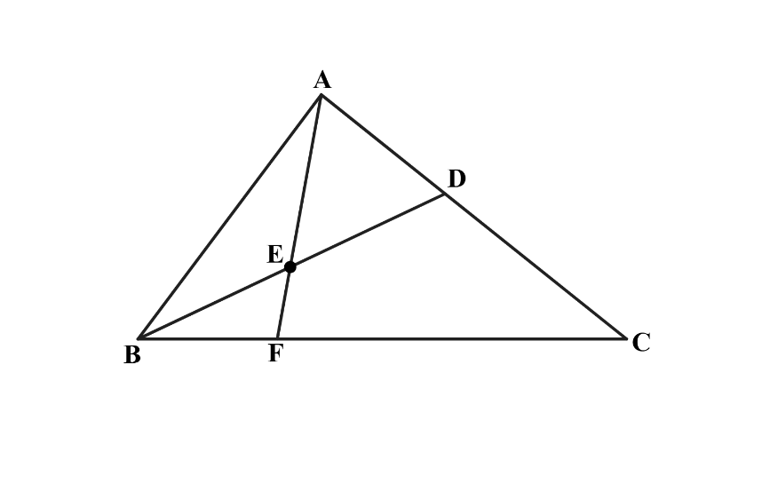

Inspiration
I was inspired by problem 24 from the 2019 AMC 8. In triangle ABC, point D divides side AC such that AD:DC = 1:2. Let E be the midpoint of BD and let F be the point of intersection of line BC and line AE. Given that the area of △ABC is 360, what is the area of triangle △EBF?
This problem initially seemed scary, and calculating areas directly felt complicated. Much later, I discovered that mass point geometry provided an elegant solution. By assigning masses to the vertices, the ratios and areas fell into place naturally. This experience showed me the power of choosing the right method for a problem, and it inspired me to build this interactive demonstration to help others understand and appreciate this beautiful technique.

This problem showcases how mass point geometry can elegantly solve what otherwise might require coordinate geometry or complex area calculations.
Process
I started by understanding mass point geometry through the AMC 8 problem. My process involved three key steps:
- Research & Theory: I studied how assigning masses to vertices creates balance points, and how ratios on sides relate inversely to masses.
- Interactive Visualization: I built two demos—one showing how masses determine a point's position on a line segment, and another demonstrating how three concurrent cevians work in a triangle.
- Implementation: I used HTML Canvas for rendering, mouse event listeners for interactivity, and mathematical functions to ensure geometric correctness.
What I learned
Mass point geometry is a powerful technique for solving problems involving ratios and areas in triangles. It allows for elegant solutions by assigning "masses" to vertices, which then determine the positions of points on segments and the relationships between areas.
This process also taught me about coding and how to implement mathematical concepts in an interactive environment.
Also, I orginally programmed a part of this website with AI and I did not understand what the AI did, so I made my own version using simpler and more understandable concepts.
Mass Points on a Line
Drag point D along segment BC.
BD : DC =
Mass at B =
Mass at C =
Mass at D =
Triangle with Concurrent Cevians
Drag point P
Disclosure: Originally I used AI to write the part that ensures point P always stays inside the triangle. But I decided to rewrite it myself. As a result of this the function is much worse. The AI used barycentric coordinates which is an advanced technique to keep P in the triangle, but currently I use the equations of the lines to keep it within bounds. So if point P escapes the triangle drag it back inside
BD : DC =
CE : EA =
AF : FB =
Why This Is Guaranteed Correct
The Law of Lever
Mass point geometry is based on the law of lever from physics. If two masses are balanced on a lever around a fulcrum, then:

Mass₁ × Distance₁ = Mass₂ × Distance₂ The distances are the distance from the mass to the fulcrum
If point D divides segment BC such that BD : DC = m_C : m_B, then assigning mass m_B at B and mass m_C at C makes D the balance point. The mass at the fulcrum D is simply m_B + m_C.
Cevians and Concurrent Lines
A cevian is a line segment from a vertex of a triangle to a point on the opposite side. When you assign masses to the three vertices A, B, and C, each side finds its balance point (fulcrum), and the three cevians from vertices through these balance points all meet at a single point—called the concurrent point.
This is guaranteed by Ceva's Theorem: if cevians AD, BE, and CF are concurrent at point P, then the product of the three ratios equals 1.
Why It Works
When you drag point P in the triangle demo, the interactive visualization assigns masses to A, B, and C such that:
- Point D on BC balances masses at B and C
- Point E on CA balances masses at C and A
- Point F on AB balances masses at A and B
Because the masses are consistent across all three vertices, all three cevians pass through the same point P. No special calculations are needed, the physics of the lever guarantees it.